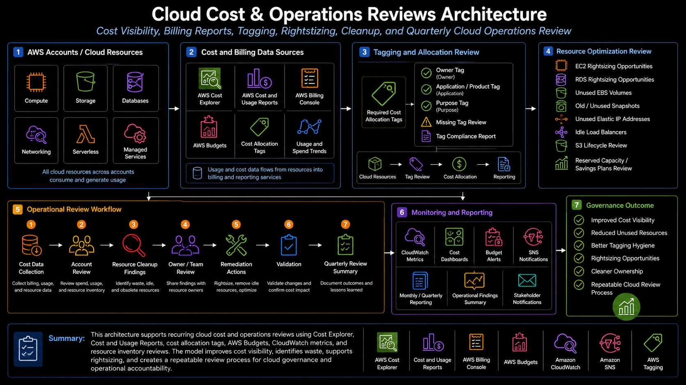

Project Documentation
Cloud Cost & Operations Reviews
This project documents a recurring cloud cost and operations review model for AWS environments. The work focused on improving cost visibility, strengthening tagging discipline, identifying resource waste, reviewing account-level cost drivers, and creating a repeatable process for stakeholder-facing cloud review conversations.

Overview
This project documents a recurring cloud cost and operations review model for AWS environments. The work focused on improving cost visibility, strengthening tagging discipline, identifying resource waste, reviewing account-level cost drivers, and creating a repeatable process for stakeholder-facing cloud review conversations.
The project combined cost management and operational review because cloud spend is rarely just a billing issue. Cost trends are often connected to resource ownership, tagging gaps, idle infrastructure, oversized services, forgotten snapshots, unused storage, backup retention, workload growth, and operational decisions made over time. The goal was to create a practical review process that helped technical teams and business stakeholders understand where spend was coming from, what needed follow-up, and which actions could reduce waste or improve forecasting.
Background
As AWS account usage grows, cost visibility becomes harder to manage if spend is only reviewed at the invoice level. A single monthly bill does not show whether spend is tied to active workloads, underutilized compute, idle databases, unattached storage, old snapshots, missing lifecycle policies, untagged resources, or services that no longer have a clear owner. To make cost review useful, billing data needed to be connected to resource inventory and operational context.
The cloud operating model also needed a repeatable way to support quarterly reviews. Stakeholders needed to understand account-level trends, top service cost drivers, budget awareness, forecast direction, and specific remediation items. Technical teams needed enough detail to know what to investigate, while business teams needed a clear explanation of what was driving cost and what actions were being taken.
This project supported that operating model by combining AWS Cost Explorer, AWS Budgets, Cost and Usage Reports, tagging, CloudWatch metrics, Trusted Advisor-style checks, resource inventory review, and remediation tracking into a practical review workflow.
Business Problem
The business problem was limited cost transparency and inconsistent ownership. Cloud resources can continue running long after the original need has changed, especially when environments are created for testing, projects, migrations, temporary support, or application changes. Without strong tagging and recurring review, it becomes difficult to know who owns a resource, whether it is still needed, and whether the current spend is justified.
Another challenge was separating real optimization opportunities from noise. A high-cost service is not automatically waste if it supports a production workload. At the same time, low-cost resources can accumulate across accounts and create unnecessary spend when they are unattached, idle, duplicated, or no longer owned. The review process needed to balance cost awareness with operational accuracy.
The platform need was to create a consistent review model that could identify cost drivers, validate resource usage, improve tagging and ownership, support budget conversations, and track remediation without inventing unrealistic savings claims or disrupting active workloads.
Architecture
The architecture used AWS billing, tagging, monitoring, and inventory data as inputs into a recurring review process. AWS Cost Explorer provided a view into account-level and service-level spend. AWS Budgets supported budget awareness and alerting. Cost and Usage Reports provided deeper billing data for analysis and reporting. Tags helped connect resources to owners, applications, environments, cost centers, or business context.
Operational services were also part of the review model. CloudWatch metrics helped validate whether compute resources were active or underutilized. EC2 inventory helped identify running instances, stopped instances, unattached EBS volumes, elastic IP addresses, AMIs, and snapshots. RDS review helped identify idle databases, storage growth, backup retention, and instance sizing concerns. S3 review helped identify storage growth, lifecycle policy opportunities, access patterns, and buckets that needed ownership clarification. Lambda review helped identify functions that were inactive, obsolete, or missing clear ownership.
The review architecture connected cost data to operational findings. Cost Explorer and Cost and Usage Reports showed where spend was occurring. Resource inventory and CloudWatch helped explain why the spend existed. Tagging connected resources to owners. The quarterly review workflow turned those findings into remediation items, stakeholder reporting, and follow-up validation.
What I Did
I supported cloud cost and operations reviews by analyzing cost drivers, reviewing AWS account usage, identifying underutilized or idle resources, checking tagging and ownership gaps, and helping translate technical findings into stakeholder-ready review material. The work included reviewing AWS Cost Explorer, AWS Budgets, cost and usage data, resource inventory, EC2 usage, RDS usage, S3 storage, Lambda activity, snapshots, backups, unattached volumes, and CloudWatch metrics.
I also supported the operational side of cost review. When a resource appeared idle or expensive, the next step was not simply to delete it. The review needed to determine whether the resource had an owner, whether it supported an active workload, whether it was required for recovery, whether it was part of a known deployment pattern, and whether remediation could be completed safely. This helped avoid treating cost optimization as a blind cleanup exercise.
The work also involved preparing findings in a way that business and technical stakeholders could understand. Cost data needed to be summarized by account, service, ownership, trend, and remediation category. This created better forecasting conversations and helped teams understand whether spend changes were caused by workload growth, missing cleanup, infrastructure changes, or known business activity.
Implementation Details
1. Account-level cost review
The review process began at the account level. Each account was reviewed for monthly spend, service-level cost distribution, recent cost changes, and major cost drivers. This helped identify which accounts needed deeper review and which services were responsible for the largest portions of spend.
2. Service-level cost analysis
Cost Explorer and cost reporting data were used to review major services such as EC2, RDS, S3, Lambda, data transfer, CloudWatch, NAT gateways, backups, and managed services. Service-level review helped separate expected workload cost from possible waste, such as idle compute, unneeded storage, or old backup artifacts.
3. Tagging and ownership review
Tags were used to connect cloud resources to ownership and business context. The review process looked for missing, inconsistent, or unclear tags that made cost allocation difficult. Stronger tagging discipline helped improve cost visibility, made reporting more useful, and reduced the amount of manual follow-up required to identify resource owners.
4. EC2 and compute optimization review
EC2 review included checking running instances, stopped instances, instance families, utilization signals, attached volumes, AMIs, elastic IP addresses, and auto scaling patterns. CloudWatch metrics supported the review by showing whether a compute resource appeared underutilized or inactive. The goal was to identify candidates for rightsizing, shutdown, scheduling, ownership review, or further investigation.
5. RDS and database cost review
RDS review focused on database instance size, storage growth, backup retention, idle databases, monitoring data, and ownership. Databases often require more careful review because they may support critical applications even when usage appears low. The process helped identify where database resources needed validation, resizing consideration, backup review, or owner confirmation.
6. S3 storage and lifecycle review
S3 review focused on bucket ownership, storage growth, lifecycle policies, retention needs, access patterns, and backup or archive usage. The goal was to identify buckets that needed lifecycle management, cleanup, storage class review, or clearer ownership. This helped reduce waste while preserving data that was still required for application, audit, or recovery purposes.
7. Snapshot, backup, and AMI review
Snapshot and backup review helped identify storage artifacts that might no longer be needed, while still respecting recovery requirements. Old snapshots, AMIs, and backup copies needed to be evaluated carefully because they can be tied to disaster recovery, rollback, compliance, or application support. The review process helped separate valid recovery assets from stale or ownerless storage.
8. Lambda and serverless activity review
Lambda review focused on function activity, ownership, monitoring, triggers, and operational purpose. Inactive or unclear functions were reviewed as potential cleanup candidates, but only after validating whether they were used for scheduled jobs, event-driven workflows, operational automation, or infrequent business processes.
9. Budgets and alerting
AWS Budgets supported budget awareness and alerting. Budget review helped stakeholders understand whether current spend was tracking as expected, whether forecasts needed attention, and whether alerts should be adjusted. This helped move cost discussions from reactive invoice review to more proactive cost management.
10. Stakeholder reporting and remediation tracking
Findings were organized for stakeholder review. Reports summarized cost drivers, ownership gaps, resource cleanup candidates, tagging issues, budget concerns, and follow-up items. Remediation tracking helped ensure that review findings did not remain as static recommendations and instead moved through owner confirmation, action, validation, and closure.
Validation
Validation focused on confirming that cost findings were accurate and operationally safe. A resource was not marked as waste simply because it appeared underutilized. The review needed to confirm ownership, usage pattern, business purpose, backup requirements, monitoring data, and dependency risk. This helped prevent accidental disruption while still identifying real cleanup or optimization opportunities.
Cost validation included checking whether Cost Explorer, Cost and Usage Reports, resource inventory, and service-level views told a consistent story. If a service appeared as a major cost driver, the review needed to identify the actual resources behind that spend and determine whether the cost was expected, increasing, unexplained, or tied to known workload changes.
Remediation validation occurred after an action was completed. If a volume was removed, an instance was stopped, a database was resized, a lifecycle policy was added, or a tag was corrected, the follow-up review confirmed that the change was completed and that reporting reflected the updated state. This kept the review process accountable and helped maintain trust in the findings.
Operational Workflow
The operational workflow began with gathering billing and usage data. Cost Explorer, Budgets, Cost and Usage Reports, account-level billing views, and service-level cost breakdowns were reviewed to identify major spend categories and unusual changes. This provided the financial starting point for the review.
The next step was resource investigation. EC2, RDS, S3, Lambda, EBS, snapshots, backups, and other services were reviewed to determine what resources were driving cost. CloudWatch metrics, inventory data, tags, and ownership records helped explain whether the resources were active, idle, oversized, missing tags, or unclear in purpose.
After investigation, findings were grouped into review categories. Some findings related to tagging and ownership. Some related to idle or unattached resources. Some related to backup retention or storage growth. Some related to rightsizing and utilization. Others required business confirmation before action could be taken. Grouping findings this way made stakeholder review more practical and helped avoid overwhelming teams with disconnected technical items.
The final step was remediation tracking. Findings were assigned to the appropriate owner or support path, reviewed for risk, remediated where approved, and validated after completion. Recurring review helped identify repeated patterns, such as missing tags, stale test resources, old snapshots, or unmanaged storage growth, which could then inform better platform standards and automation.
Outcome
The project improved cost visibility by connecting billing data to resource-level operational context. Stakeholders could better understand which accounts and services were driving spend, while technical teams had clearer evidence for investigating cleanup, rightsizing, tagging, and ownership issues.
The work also improved operational review. Instead of treating cost optimization as a one-time cleanup task, the process created a repeatable quarterly model for reviewing spend, validating resource usage, identifying waste, confirming owners, and tracking remediation. This made cloud cost management more consistent and easier to discuss across technical and business groups.
The biggest value was clearer ownership and better forecasting conversations. By improving tagging discipline, organizing findings, and connecting cost trends to operational causes, the review process helped teams understand where spend was going and what actions could reasonably improve efficiency without risking active workloads.
What This Demonstrates
This project demonstrates practical cloud cost management and AWS operations experience across Cost Explorer, AWS Budgets, Cost and Usage Reports, tagging, account-level cost review, resource inventory, EC2, RDS, S3, Lambda, snapshots, backups, CloudWatch metrics, stakeholder reporting, and remediation tracking.
It also demonstrates platform engineering judgment. Cost optimization is not just about finding expensive resources. It requires understanding ownership, utilization, business purpose, recovery requirements, monitoring data, tagging quality, and safe remediation. This project shows how cost data and operational review can be combined into a repeatable process that improves visibility, reduces waste, strengthens tagging discipline, and supports better cloud governance.